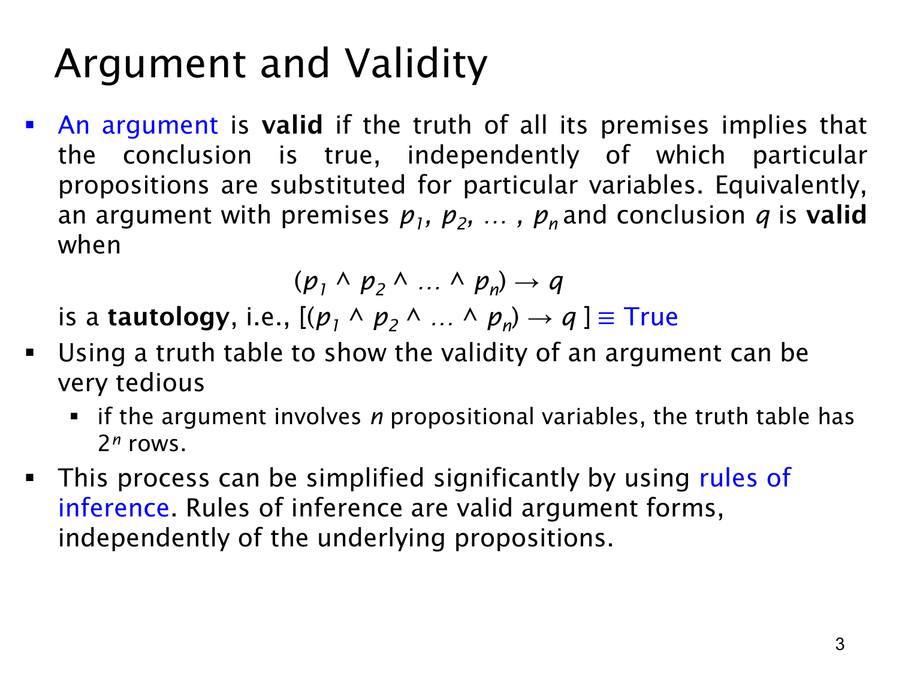

L1.3 · 第 3 页讲解原文
查看这一页课件

论证的有效性：前提全真时结论不得为假
一段论证有效（valid），是指无论其中的命题变量代表哪些具体命题，只要所有前提都真，结论就一定真。设前提为 p1,p2,…,pn，结论为 q，这个要求可写成
(p1∧p2∧⋯∧pn)→q≡T.
右侧的 T 表示整个条件句是永真式：对所有变量真值赋值都为真。条件句只有在“前件真、后件假”时为假，所以检验有效性等价于寻找一种所有前提都真而结论假的赋值；找得到，论证无效；找不到，论证有效。
这里要区分“有效”和“前提在现实中为真”。有效性只保证如果前提真，结论必真，不负责核实前提的事实准确性。即使某个前提实际是假，一种推理形式仍可能有效，因为它没有允许“前提全真、结论假”的情况。
可以列真值表机械检验，但若涉及 n 个不同命题变量，就有 2n 行，变量一多便很繁琐。课件因此引出推理规则（rules of inference）：它们是已经确认有效的论证形式，能让我们把长推理拆成若干可靠步骤，而不必每题从头列出整张真值表。